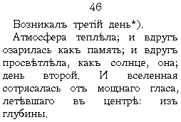
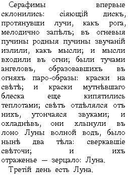
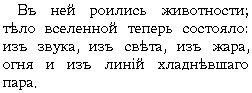
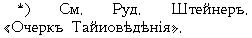

Glossolalia (Section 46a)
GLOSSOLALIA

The third day was arising.
The atmosphere warmed up; and suddenly it lit up like dawn as memory; and suddenly, it illumined like the sun; the second day. And the universe trembled from the mighty voice, flying in its center: from the deep.

The Seraphim first bowed; a shining disk, extending its rays, like a horn, sang out melodiously; generated deeps of sounds flowed out, like thoughts, into fiery deeps, and thoughts entered the fires; there were clouds of angels which had formed steam-images in the fires: colors in the light; and colors of the murkied gleam still boiled in warmths; the light separated from them, becoming refined by sounds; and when they had cooled off, they gushed into the lap of Luna (bosom of the moon) in a wave a waters; now there were two bodies: glistening lights; and their reflection was -- a looking glass: the Luna.

In it the animals swarmed about; the body of the universe was now fully constituted: from sound, from light, from heat, fire and from lines of cooled off/condensed steam.

*Cf. Rud. Steiner, Outline of Occult Science.